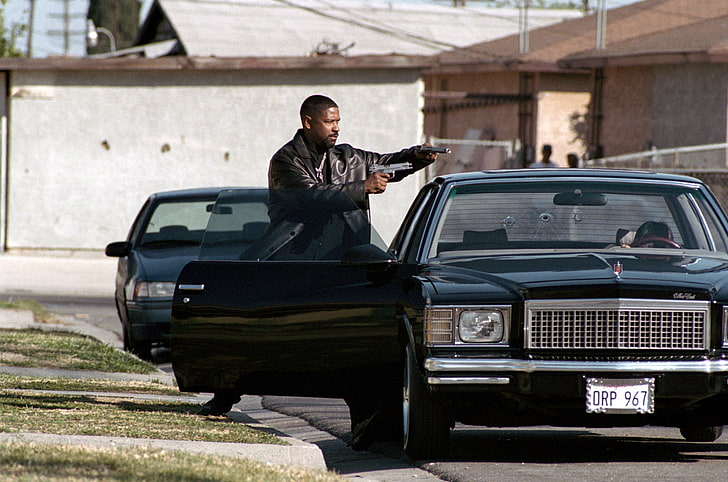
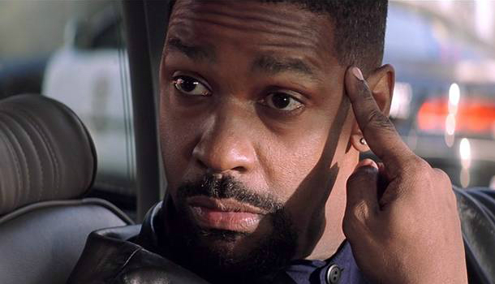
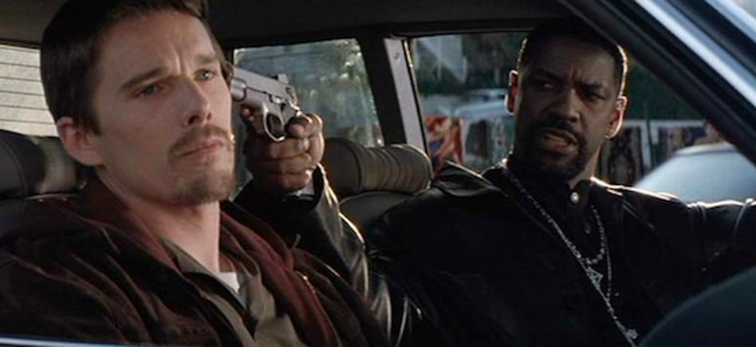

Best Quotes from Alonzo

1 ."Today's a training day, Officer Hoyt. Show you around, give you a
taste of the business. I got 38 cases pending trial, 63 in active
investigations, another 250 on the log I can't clear.
I supervise five officers. That's five different personalities.
Five sets of problems. You can be number six if you act now.
But I ain't holding no hands, okay? I ain't baby-sitting.
You got today and today only to show me who and what you're made of.
You don't like narcotics, get the f*** out of my car. Go get you a nice,
p**** desk job, chasing bad checks or something,
you hear me?"

2. "To be truly effective, a good narcotics agent must know and love narcotics.
In fact, a good narcotics agent should have narcotics in his blood.""

3. "Listen, you're in a privileged position to learn a thing or two keep your
mouth shut and your eyes open you say you're serious about doing some real
police this is the place to learn but if this kind of shit shakes you up
maybe you should go back to your division you have to decide if you're a
wolf or a sheep"